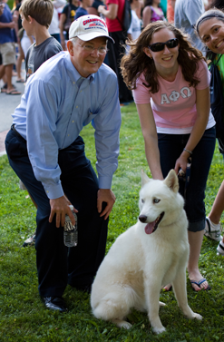

Snowball is a pure white Siberian husky gifted to WestConn by the university of Alaska in 2003. He suffers from anxiety around large crowds, but still attends every women's basketball game.
His strange behavior at games is a constant source of rumors among the student body. He avoids cameras like the plague, so there is always little footage of him from games, but some students swear they've seen him move... strangely